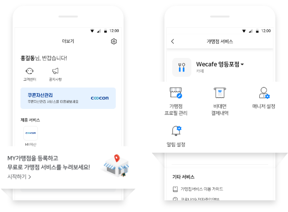
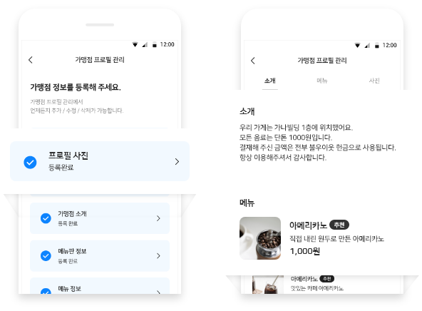
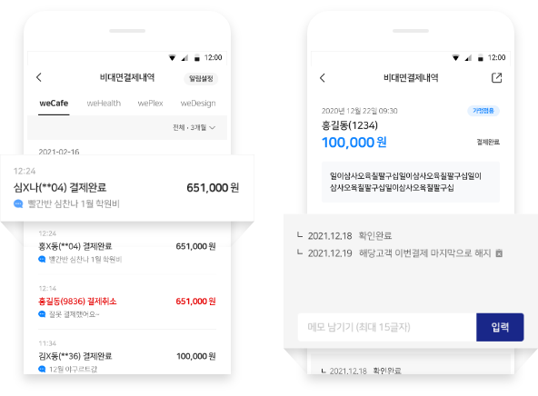
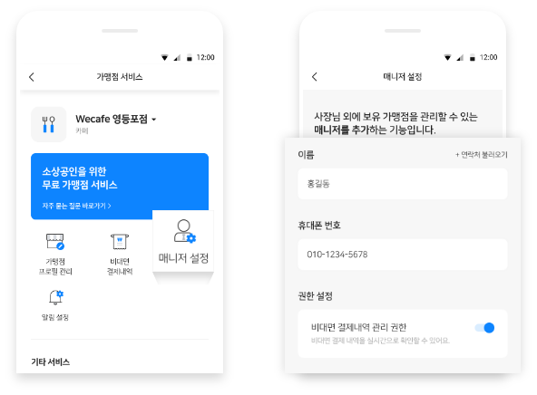
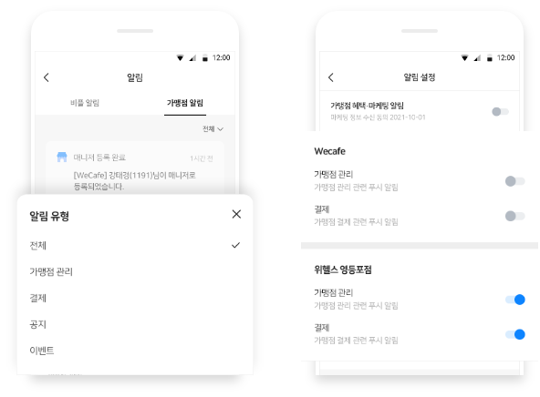

이제 더 편리하고 다양해진
비플 가맹점 서비스로
가게 운영에 꼭 필요한 혜택
놓치지 마세요!
- 가맹점 서비스가 무엇인가요?
-
비플페이 가맹점 사장님이면 누구나 무료로 다양한 서비스를 제공받을 수 있어요.
가맹점프로필 관리, 비대면 결제내역 확인, 매니저 설정 등 사장님께 꼭 필요한 서비스를 경험해 보세요.

- 가맹점 프로필 관리가 무엇인가요?
-
가맹점 프로필 관리는 가맹점 프로필 사진, 영업시간, 소개, 메뉴,메뉴판, 가맹점 사진 등을 등록하고 관리할 수 있는서비스에요.
고객들에게 비대면결제내역, 가맹점찾기에서 가맹점에 대한 정보가 노출되며 가맹점의 소식과 정보를 고객들에게 효과적으로 전달할 수 있어요.

- 비대면 결제가 무엇인가요?
-
비대면 결제는 언제 어디서나 매장을 방문하지 않아도 결제가 가능한 결제 서비스에요.
사장님께서는 고객의 비대면 결제내역을 실시간 알림을 통해서 확인하실 수 있어요. 추가로 고객 메세지까지 확인이 가능해요.

- 매니저 설정은 어떤 기능인가요?
-
매니저 설정은 사장님 외에 비플가맹점서비스를 관리할 수 있는 매니저를 추가하는 기능이에요.
ON/OFF 방식의 권한 설정을 통해 가맹점프로필 관리, 비대면 결제내역 확인 등 사장님이 직접 관리하지 않아도 가맹점을 관리할 수 있어요.

- 알림 설정은 어떤 기능인가요?
-
알림 설정은 가맹점별로 알림을 설정할 수 있는 기능이에요. 가맹점별로 가맹점 관리, 결제 알림을 설정할 수 있어요.
또한, 알림 제한 시간 설정 기능을 통해 원하는 시간을 설정할 수 있어 휴무일, 휴식 때 방해받지 않을 수 있어요
더 궁금한 점이 있으신가요?
고객센터에 문의하기 1670-0136
평일 09:00 ~ 18:00 / 토요일, 공휴일 제외